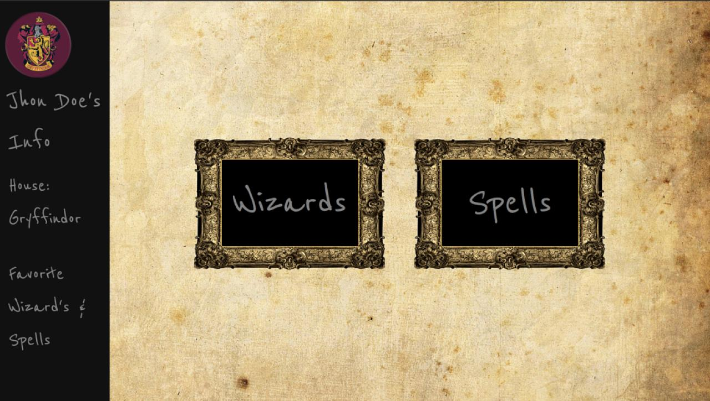

Project2 - "Harry Potter"
Demo
Front-End
Back-End
This project will Inform Harry Potter’s characters, spells and users can add their favorite. (pair project)
- Fetch Harry Potter’s API back-end(Ruby on Rails) and use API front end(React) / Stylish(Semantic)
- Created User ID where the user will be assigned one of the houses randomly
- Show all characters and search them and add favorite characters if users like
- Show all spells and add favorite if users like
- See all of the favorite characters, spells on other page and delete if user do not like anymore
